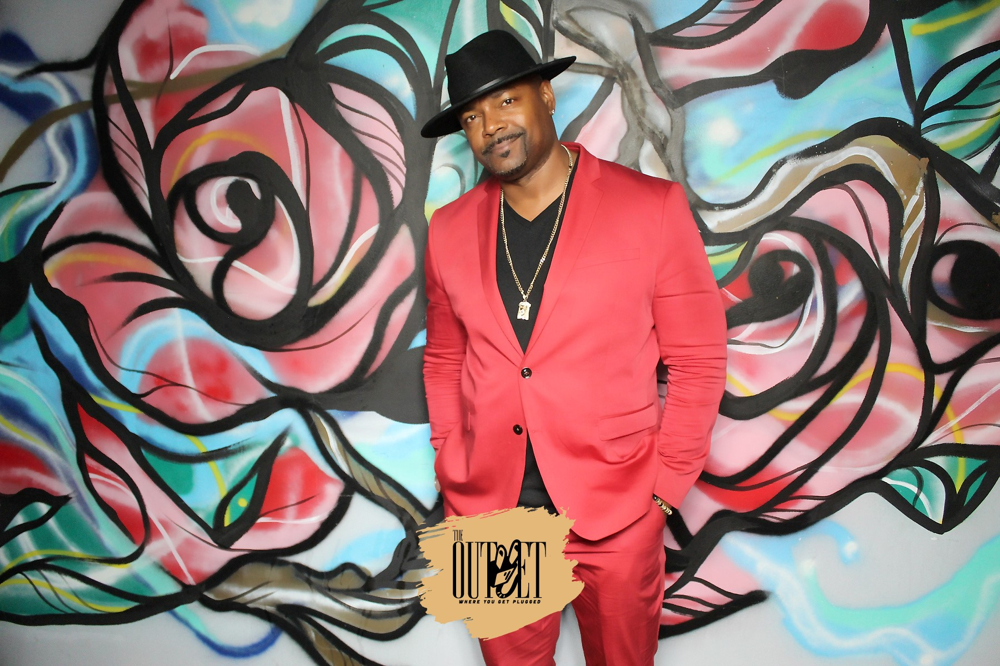

La Misión Review
Submit creative work, read student writing, or learn how you can help create LAMC’s literary journal.
Explore La Misión ReviewConnect with ECJ
Classes are only one part of ECJ. Publish your work, join a student community, follow ECJ groups, meet faculty, and share what you think.
Start with the community or opportunity that feels most like you.
Submit creative work, read student writing, or learn how you can help create LAMC’s literary journal.
Explore La Misión ReviewConnect with the LAMC Puente Club and see current club activities, events, and ways to get involved.
Visit the Puente Club on InstagramConnect with students interested in speaking and debate, and see current club activities and updates.
Visit the Speech & Debate Club on InstagramMeet three ECJ professors teaching new late-start classes this fall.

Adjunct Assistant Professor of Journalism and TV/Film
P. Frank Williams is an award-winning journalist, filmmaker, and professor whose work spans documentary television, print journalism, and hip-hop media. An Emmy and eight-time NAACP Image Award winner, he has worked on Freaknik: The Wildest Party Never Told, Killing Hip Hop, and Unsung, served as executive editor of The Source, and reported for the Los Angeles Times. He studied journalism at San Diego State University and Columbia University.
Adjunct Assistant Professor of Journalism
Erinn Eichinger is a journalism and media educator with experience in broadcast news, documentary production, podcasting, and digital editing. She holds a BA in Journalism and an MA in Mass Communication from California State University, Northridge. Her teaching helps students strengthen their visual storytelling, news production, digital editing, and critical understanding of media.
Adjunct Assistant Professor of Communication Studies
Surmani Sanford teaches oral communication, performance studies, media, and popular culture. Sanford holds an MA in Communication Studies with a focus in Performance Studies from the University of California, Riverside, and a BA in Communication Studies with a minor in Africana Studies from California State University, Northridge. Sanford’s teaching emphasizes clear explanations, inclusive learning, and helping students build confidence as communicators.
Tell ECJ what is working, what could be better, or who deserves a little recognition.
Share a suggestion, describe an experience with an ECJ class or program, or recognize something a professor or the department did well.
LACCD sign-in is required to open the form. The form is set so your name is not recorded in your response unless you choose to provide it. You can also choose whether ECJ may share your words as a quotation.